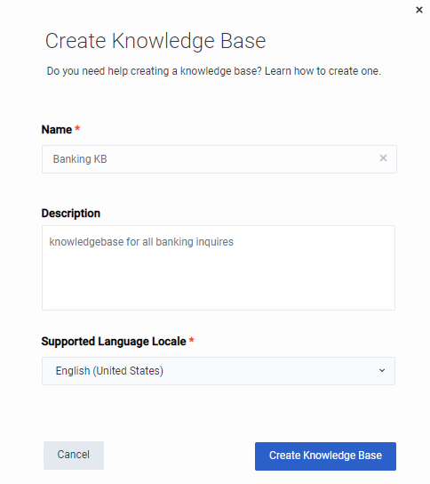
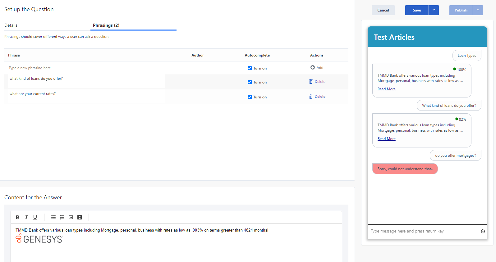
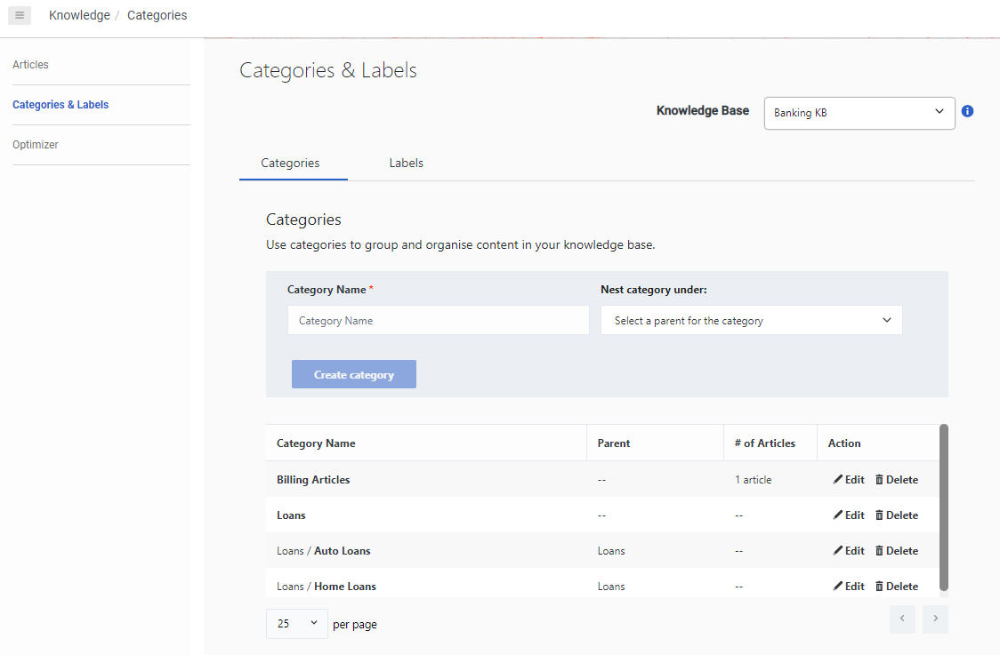

Genesys DX knowledge base enables a knowledge author to create and manage knowledge, view knowledge performance, and provide feedback to train knowledge services. The knowledge base enhances the customer’s self-service experience and increases performance for agents who respond to customer inquiries.
You can create and maintain a knowledge base of questions and answers. When a user asks a question, Genesys DX AI looks for a similar question in the Knowledge Base. When a similar question is found, the corresponding answer is returned to the user. If the answer is not yet in the knowledge base yet, the user can escalate it to an agent via ticket or chat.
To create a new knowledge base, follow these steps:

With the knowledge base built, you can now add new question and answer articles, or you can import a previously configured .csv file to create a knowledge base. After you import the file, the system uses the information in the knowledge base to respond to questions. In this workshop we will cover manually adding a new article.
Content is the actual response that the customer will receive if they provide a phrase that matches the article. These can be plain text or include videos and images
An article might provide an answer to numerous question, or there may be numerous ways to ask the question that the article may answer. Phrases allow you to configure the many possible ways a question answered by this article may be asked.
This will display the accuracy and actual responses a customer will get back depending on how they ask a question

Categories and Labels Categories are used to group documents with similar content. For example, you could have a single category for documents that relate to home loans, another category for documents that relate to insurance policies, and so on. When you create documents, you can link them to one category. Where applicable you can also assign Parent Categories, allowing for more refined grouping of articles

Labels allow tagging of content to display the type of content that is being consumed. For example, you might label content as videos or diagrams.